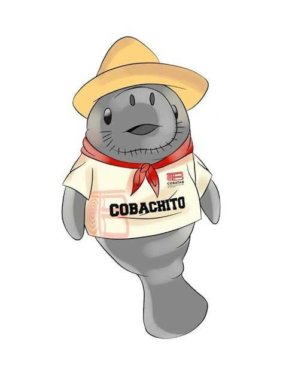

Bienvenido
Descubre cómo puedes ayudar al planeta a través de pequeños cambios. Este sitio está hecho para enseñarte la importancia del reciclaje y cómo vivir de manera más sostenible.

Descubre cómo puedes ayudar al planeta a través de pequeños cambios. Este sitio está hecho para enseñarte la importancia del reciclaje y cómo vivir de manera más sostenible.

Reciclar significa transformar residuos en nuevos productos, reduciendo el uso de recursos naturales. Estos son algunos beneficios:
El planeta Tierra es nuestro hogar, y con acciones sencillas podemos protegerlo. Aquí tienes algunas recomendaciones: